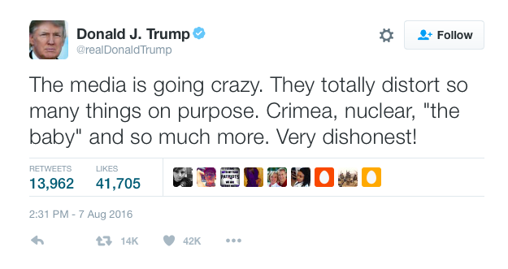
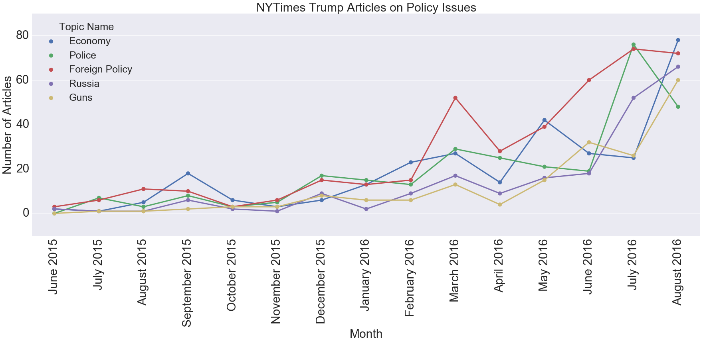
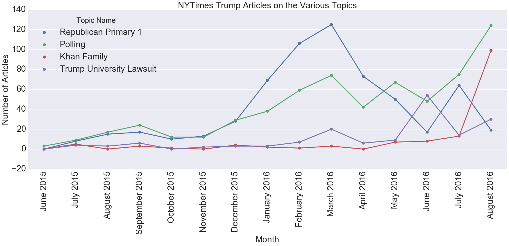

When Donald Trump first entered the Republican presidential primary on June 16, 2015, no media outlet seemed to take him seriously as a contender. He is a highly unusual candidate, and some in the media have admitted that they, and the media more generally, don’t know how to cover him, both in the primary and now in the general election. Trump himself has criticized the media’s coverage of him:

I was interested in quantitatively examining how the media has covered Trump from the start of his campaign until now. For my initial exploration, I focused on extracting the topics of the New York Times’ articles covering Trump. You can find all of my code and my presentation to Metis on my github repo.
Creating the dataset
The Times has a pretty user-friendly API. You simply need to request an API key and then you can get started gathering articles. I collected all the articles about Donald Trump between the start of his campaign (June 16, 2015) until now, but I then faced the main limitation of the Times API: it doesn’t return the full-text of the articles. For this, I turned to the newspaper package for Python. The newspaper package takes a url and then returns information about the article, including the authors and full text. The package also includes some natural language processing and can give you a summary and keywords list for each article.
I also had to limit my articles to those that were primarily about Trump. Because the API returned any article that simply had “Donald Trump” in it, I had a lot of irrelevant articles that were not actually about Trump and would have biased the analysis. I used the previously mentioned keywords function in the newspaper package to find the keywords for every article, selecting only those articles that had “Donald” or “Trump” as a keyword. My final dataset for analysis was about 2,200 full-text news articles primarily on Trump.
Topic Modeling
To extract the topics of articles, I first had to transform each article into a word vector. I did this using tf-idf, short for “term frequency-inverse document frequency.” Tf-idf is a statistic for each word in an article that increases with the number of times a word appears in that article while being offset by how frequently that word appears across the entire set of documents. Using tfidfvectorizer from scikit-learn to transform the corpus of documents, I created a matrix where each row is an article and each column is a word that has appeared in the corpus. Tf-idf is useful for when all your documents are about the same broad subject and likely to have a lot of words in common.
There are a few tricks to using tfidfvectorizer. The first is to remove a list of “stop words,” or common terms such as “it” and “they” that are not informative about the content of a document. There is a built-in list of stopwords in sklearn, but I added my own words to this list after I ran my first topic model and found a lot of irrelevant words (such as “mrs” and “nytimes”). The second is to set a minimum and maximum document argument. These exclude words that appear in more documents than your maximum number or that appear in fewer documents than your minimum. This avoids words that are so rare or so common that they are unlikely to be meaningful for understanding what a specific article is about.
Once I had my transformed articles, I could then use Non-negative Matrix Factorization (NMF) to extract the topics of articles. LDA is the more common method for topic modeling but can’t be used with tf-idf. When using NMF you have to pick a number of topics to extract. There’s no “right” answer for how many or a statistic you can use to help you choose. In my case, I iterated though multiple different numbers and settled on 30. This was the tipping point where all the topics were interpretable but any further topics were not.
Interpreting Topics
What do I mean by whether topics were interpretable? Well, topics don’t come with labels; rather, you have to interpret for yourself what each topic means. I did this by looking at the top 20 words for each topic. For example, what would you call this topic?
Topic #16:
khan khizr khans mccain ghazala captain family muslim son humayun iraq sacrifice sen killed soldier army parents gold star captSeeing words like “khan,” “son,” “soldier,” and “muslim,” this topic appears to be about Donald Trump’s confrontations with Khizr and Ghazala Khan, the parents of a Muslim American soldier killed in Iraq who criticized Donald Trump at the DNC. Therefore, I decided to call it the “Khan Family” topic.
One issue I ran into in naming topics was that there were multiple topics that I would consider to be about fundamentally the same thing. For example, look at these topics:
Topic #1:
cruz rubio ted kasich conservative texas marco primary south debate roe iowa establishment carolina wisconsin values saturday conservatives vote indiana
Topic #7:
delegates kasich delegate win vote tuesday nomination winner ohio rules 237 majority michigan indiana district california rubio dakota districts winning
Topic #17:
carson ben fiorina candidates debate carly percent muslim neurosurgeon choice huckabee christians religious conservative iowa retired faith jeb second surveyThese all looked to me to be about the Republican primary. But if I reduced the number of topics from 30 to, say, 28 when I did my NMF, these “extra” republican primary topics didn’t simply merge into one. Instead, I lost other interpretable topics that I wanted to keep. Therefore, I decided to keep all 30 topics and simply call them “Republican Primary 1,” “Republican Primary 2,” etc.
Working with NMF
I now had a matrix where each row was an article, each column was a topic, and the value was how prevalent that topic was in that article. While each value is between 0 and 1, unlike LDA the columns in a row do not add up to 1, and so you can’t interpret a value as the “proportion” of a topic in a given article. Each document also can be, and usually is, associated with more than one topic. For example, an article about the economic policies of the republican primary contenders would probably be related to both the “economy” and “republican primary” topics. Because of that, it’s generally not appropriate to assign each document to a single topic (e.g. by picking the topic with the highest value).
In my case, I decided to consider an article was about a topic if the article-topic entry wasn’t zero. I thus transformed my matrix so that anything that wasn’t zero became 1. This certainly has some disadvantages, but it was appropriate for my interest in understanding when a topic was covered at all by the Times.
Visualizing Coverage over Time
After my first attempt to graph all of the topics on the same time-series plot looked like something out of a nightmare, I realized I needed to limit my graphs to only a few topics at a time. One way to do this was to group topics into a few categories and create a plot for each one. Here’s one for all the topics I considered to be policy issues.

You can see that foreign policy has been the one generally covered the most (possibly because of Trump’s frequent mentions of Putin), and police had a big spike in July when the Dallas shooting happened.
Pitfalls of Topic Modeling
Take a look at the following graph. Notice anything strange about it?

Take a look at the Khan family topic in May and June 2016. The points are non-zero, meaning there were articles about that topic in those months. But this was before the incident even happened!
I took a closer look at these articles and found they were about Donald Trump and Sadiq Khan, London’s newly elected Muslim mayor. The problem was that while certainly all top words in the topic, such as “sacrifice” or “star,” weren’t in these articles, a few of the most unique ones (khan, muslim) were. In fact, if I was to assign a topic to this article, that topic would still be the best fit.
Normally it’s not “impossible” for a topic to be present in a document and so you can’t see these types of limitations. But this is a good illustration of the limitations of interpreting a topic.
Conclusions
Because this was an exploratory analysis, I didn’t start out with a specific hypothesis I wanted to test. For example, I could have instead used sentiment analysis to test if Times’ articles about Trump used more negative words than those about Clinton. I also don’t have a final number at the end that tells me how “good” my analysis is, as I did in one of my other projects where I evaluated the accuracy of my predictions using AUC.
Instead, I’m only able to conclude with some general impressions I gained from the topic modeling. The first is that none of the topics were particularly surprising; you can see the full list in my jupyter notebook. The most commonly covered topics were about the Republican primary and polls (“percent”, “poll”, “points”, “survey”). I did find it interesting that two controversial incidents, the Trump University lawsuit and the Khan family conflict, were prominent enough to get their own topics.
Next Time
One of the benefits of attending Metis is that the last three weeks of Metis are devoted to working on a project entirely of your own choosing. You can check out some of the projects here; they range from an application that uses computer vision to read wine labels to predicting the length of an NFL runningback’s career. While our previous projects are presented just to the other Metis students and the instructors, we present our final projects on a “Career Day” to about 25 employers.
For my final project, I created an application that helps data science freelancers find the freelance jobs that best fit their preferences and skills. You can check out the application here. All of my code for the project and the application is on github. My next blog post will document how my project evolved and some of the exploratory work I did before creating the application.